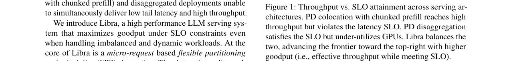
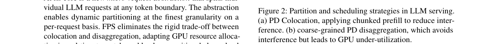
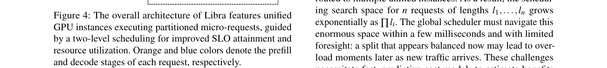

Libra: Flexible Request Partitioning and Scheduling for Serving Unbalanced and Dynamic LLM Workloads
总结
LLM推理系统需要同时满足严格的延迟SLO（如100ms P99 TBT）和最大化吞吐量，但真实工作负载中prompt和response长度的剧烈波动导致计算密集的prefill阶段与内存受限的decode阶段严重失衡，现有架构难以兼顾低尾延迟与高吞吐。
As-is: 当前主流方案分为两类：PD共置（colocation，如vLLM的chunked prefill）将prefill和decode放在同一GPU实例上运行，虽然资源利用率较高，但长prefill批次会阻塞延迟敏感的decode步骤，导致P99 TBT飙升至352.93ms（SLO达标率仅1.73%）；PD分离（disaggregation，如DistServe）将两阶段物理隔离到不同GPU池，能稳定满足延迟SLO，但在工作负载不均衡时造成严重资源浪费——例如prefill-heavy场景下decode GPU的MFU仅0.19%。两种方案都依赖静态配置（固定chunk大小或固定GPU分配比例），面对动态变化的工作负载时不可避免地走向次优。
To-be: Libra提出了灵活分区与调度（FPS）抽象，将每个请求在任意token边界拆分为多个协作的微请求（micro-request），所有GPU作为统一资源池处理任意微请求。通过两级调度框架——全局调度器搜索最优切分点并路由微请求，本地调度器在每GPU实例上构建SLO感知的批次——Libra在A100/H100集群上的真实trace测试中，将goodput提升最高1.91×（对比PD共置）和1.61×（对比PD分离），服务容量提升1.15×至3.07×，在混合工作负载下性能提升最高74.2%。
背景
LLM推理包含两个截然不同的阶段。Prefill阶段一次性并行处理所有输入token，生成KV缓存并输出第一个token，是计算密集型的，能充分利用GPU并行能力。Decode阶段则逐个生成后续token，依赖已积累的KV缓存，属于内存受限型，算术强度低，大量计算单元闲置。两个阶段的相对强度高度依赖输入和输出序列长度。
现代LLM服务系统需要同时处理大量并发请求，并满足严格的延迟SLO。关键延迟指标包括：TTFT（time to first token）衡量prefill速度，TBT（time between tokens）衡量decode效率。系统目标是在满足SLO的前提下最大化goodput——即满足延迟SLO条件下每秒生成的输出token数。

如图1所示，现有架构在吞吐量与SLO达标率之间存在根本性权衡：PD共置（含chunked prefill）吞吐量高但违反SLO，PD分离满足SLO但GPU利用率低。Libra则向右上角推进，同时实现高goodput和高SLO达标率。
问题
论文通过分析Azure Code和BurstGPT两个真实trace，揭示了工作负载的不平衡性与动态性。如图3所示，prompt长度（蓝线）和response长度（橙线）随时间剧烈波动，且与"平衡输出长度"（绿线，即decode时间等于prefill时间所需的输出token数）的关系频繁翻转——有时decode主导，有时prefill主导，且切换迅速。Alibaba的Infinite-LLM甚至报告生产环境中上下文长度从几个token到超过两百万不等。

论文通过一个精心设计的微基准测试精确诊断了现有架构的局限。在两块A100 GPU上，使用三种代表性请求形态进行测试：prefill-heavy（P-8192, D-32）、decode-heavy（P-219, D-1467）和balanced（P-2048, D-512），结果如表1所示：
PD分离的困境：1P:1D的固定分配导致严重资源失衡。在prefill-heavy场景下，prefill GPU（G1）MFU达43.24%，而decode GPU（G2）仅0.19%几乎完全闲置；decode-heavy场景则相反。即使在balanced场景，G1内存利用不足、G2计算利用不足。虽然P99 TBT始终低于75ms满足SLO，但吞吐量受损。
PD共置的困境：虽然两GPU资源利用更均衡，吞吐量看似更高（如prefill-heavy场景1.49 rps vs 分离的0.83 rps），但延迟严重失控。长prompt场景P99 TBT高达352.93ms，SLO达标率仅1.73%。即使在balanced场景P99 TBT也达336.81ms，SLO达标率84.09%。这种高吞吐在实际生产中不可用。
核心矛盾：静态分区是脆弱的。为prefill-heavy优化的配置在流量转向decode-heavy时立即次优。真实服务提供商必须在固定GPU池上服务动态不可预测的工作负载，无法承受硬件闲置。实时更改并行策略又会引入额外开销。因此需要从静态集群级配置转向动态请求级适配。
解决方案
Libra的核心是灵活分区与调度（FPS）抽象，包含三个关键设计组件。
微请求抽象
每个请求r由prompt长度P和预测decode长度D描述，总逻辑长度L = P + D。FPS关联一个切分点s（0到L之间），将请求分为两个微请求：rα（token 1...s）和rβ（token s+1...L）。当s在边界（0或L）时，一个微请求为空即不分区。微请求是连续token跨度，可表示纯prefill、纯decode或两者的混合。

如图4所示，FPS覆盖了广义的请求分区空间：PD共置（不分区，如请求Dα）和PD分离（在prompt边界分区，如请求Cα/Cβ）只是FPS的特例。FPS还支持混合切分——如将早期prefill与部分decode合并（请求Aα），或将部分prefill卸载到另一GPU与decode并行执行（请求Bβ）。
全局调度器：请求分区与路由
全局调度器有两个核心职责：
1. 确定最优切分点。 论文通过微基准测试（图5）发现关键洞察：最大化分离式服务系统吞吐量需要平衡各阶段吞吐量。
在Qwen2.5-32B、1024-token prompt+output的测试中，位置1024对应标准PD分离，GPU-1达5.6 rps而GPU-2仅1.7 rps，端到端吞吐被慢者限制。当切分点移至位置1358时，两GPU均达2.5 rps，系统吞吐最大化。基于此，论文提出吞吐量均衡约束：对处理分区请求的任意GPU对(gi, gj)，要求|Thpt(gi) - Thpt(gj)| ≤ ε（ε为小容忍度，如0.5 rps）。
算法1使用有界二分搜索寻找最优分区比φ：从φ = P/(P+D)（即纯PD分离）出发，每次迭代用轻量级分析延迟预测器估计两服务器执行时间T1和T2，调整φ使|T1-T2|最小化。预测使用离线profiling的查找表加LRU缓存，每次探测仅微秒级。最大迭代次数K设为6，实现O(1)每请求复杂度，且在1%误差范围内接近拥有完美未来知识的离线oracle。
2. 路由微请求。 确定φ后，调度器使用最少负载策略将rα和rβ分配到当前负载最低的两个实例，用轮询打破平局。
本地调度器：SLO感知批次构建
本地调度器在每个GPU实例上动态构建token级批次。论文通过图6的实验分析得出两个关键洞察：
- Insight 2：decode-only批次稳定满足SLO但内存受限、计算利用率低；引入适量prefill可提升利用率，但decode请求数增长到一定阈值后延迟突破SLO。
- Insight 3：批次组合（prefill长度plen、上下文长度ctx、decode数量dnum）是性能关键驱动因素，但最优配置是动态的。论文定义了延迟约束利用率（LCU）点——延迟曲线与SLO线的交点，表示不违反SLO下可处理的最大并发decode数。
算法2描述了本地调度逻辑：首先记录上一批次的(plen, ctx, dnum, time)到profile表；然后将所有decode请求纳入批次（延迟关键，必须立即处理）；基于decode部分计算平均上下文长度和decode数，查询profile表确定在SLO约束下允许的最大prefill token预算M；最后按到达顺序贪心地将prefill请求加入批次，不超过预算M。
分块KV缓存传输
如图7所示，Libra在chunk粒度传输KV缓存。Server1按等大chunk处理rα，每完成一个chunk立即通过RDMA（NCCL或Mooncake）DMA推送到Server2，同时继续处理下一chunk。由于KV缓存是append-only的，已完成chunk不可变，可安全并行传输。接收端用轻量ZeroMQ消息引导放置。在典型NVLink或RDMA配置中，传输延迟比计算时间低1-2个数量级，有效隐藏通信开销。
多分区扩展
FPS自然推广到二分区之外。例如Chain-of-Thought请求可切分为prefill、think、decode三个微请求，其中think阶段非用户可见、延迟约束宽松，调度器可对其采用更激进的负载均衡策略以提升吞吐。
测试结果
实验设置
- 模型：Qwen-2.5系列14B、32B、72B
- 硬件：主平台为两台云服务器，各配4块NVIDIA A100 80GB GPU、128 CPU、1TB RAM、4×200Gbps RoCE NIC，NVLink提供600GB/s带宽；额外在H100云上验证
- 工作负载：Poisson到达模式，输入输出长度采样自Azure Code、BurstGPT、arXiv Summarization、Mini Reasoning等真实数据集
- 基线：vLLM v0.7.2的PD共置（chunked prefill，chunk大小256-2048调优）和PD分离（扩展至v1现代调度逻辑）；DistServe设计类似vLLM PD模式故未独立比较
- 并行配置：14B用DP=2（共置）/1P1D（分离/Libra）；32B用TP=2,DP=2/2P2D；72B用TP=4,DP=2/4P4D
- SLO：主测试100ms TBT，H100上额外测试50ms严格SLO
主要结果
Goodput提升：在A100上，Libra对比PD共置goodput提升最高1.91×，对比PD分离提升最高1.61×。
服务容量提升：对比PD共置提升1.15×至3.07×，对比PD分离提升1.09×至1.67×。
混合工作负载：对比PD共置/分离性能分别提升60%/25%。
非对称基线对比：即使面对更强基线（为瓶颈阶段分配更多GPU），Libra对比非对称张量并行每GPU goodput提升最高74.2%，对比非对称数据并行提升22.8%。
H100与严格SLO：在更新硬件和更严格50ms SLO下，Libra优势进一步扩大，goodput提升最高134%。
长度预测敏感性分析
论文讨论了Libra对输出长度预测的依赖性。全局调度器基于GPU阶段间的相对执行时间做决策而非精确token数，天然限制了预测误差的影响。为防止低估导致SLO违规，设置保守安全边际（20 tokens）；轻微高估对效率影响可忽略。表5的敏感性分析确认Libra在噪声预测下仍稳定维持性能目标。
局限性
论文基于vLLM实现（约4K行Python），当前主要评估二分区设置（三分区单独评估）。长度预测虽非关键依赖但仍是有益补充。系统设计假设统一GPU实例（所有GPU等价），在异构硬件集群中的适应性未充分探讨。